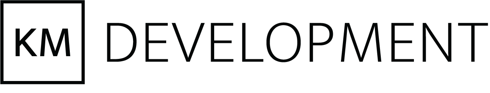
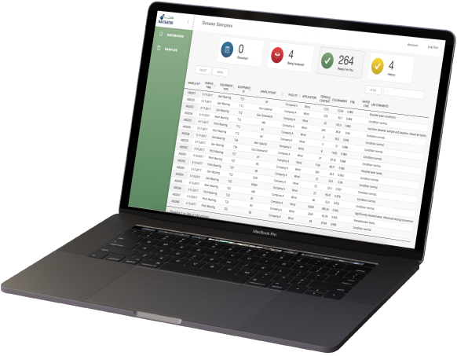
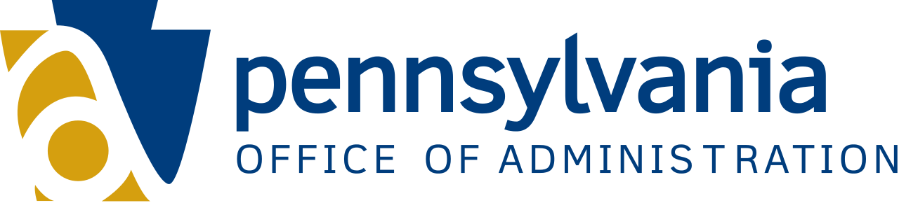
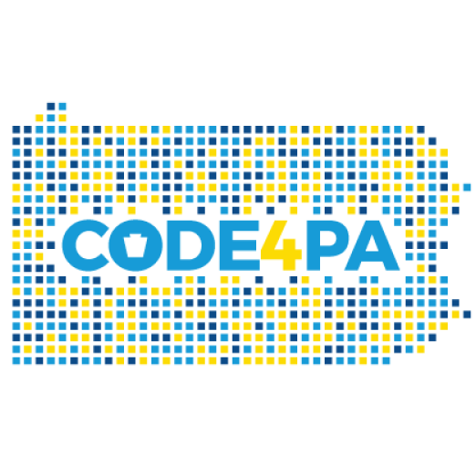
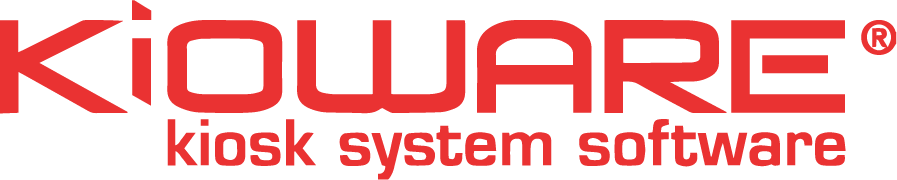
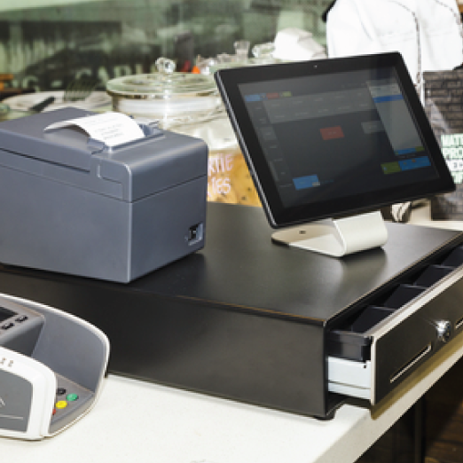
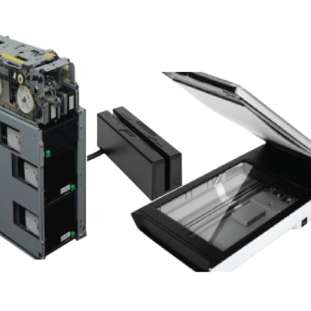
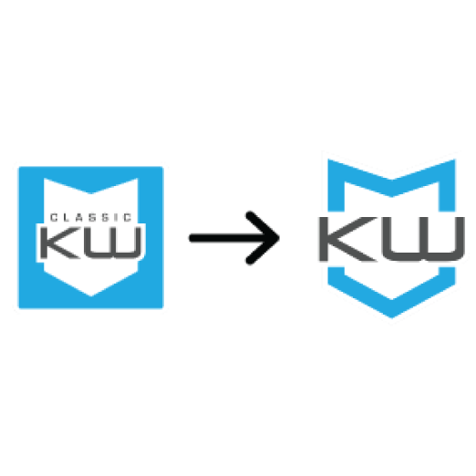
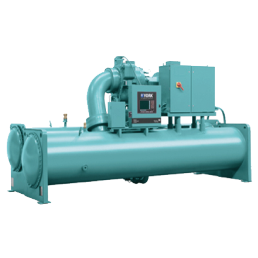
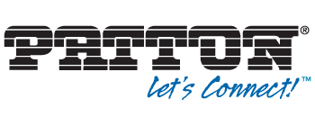

Experience

Founder | Full Stack Developer
Fall 2015 - Present
KM Development is a software development company that builds custom enterprise applications for a wide variety of clients. My technical responsibilities include managing multidisciplinary teams, full stack development, and devops while my business responsibilities include maintaining client relations, developing marketing strategies, and general management.
Related Projects

Navigator
A laboratory management system created for MRG Labs to streamline their analysis process

FAST
A test administration and analysis platform designed for a psychologist

Ironride
An app for Harley Davidson owners to connect with other riders, find new rides and document their own

Commonwealth
An online store for Commonwealth Trailer Parts, a trailer part distributer

MI-12 Ventures
A website for MI-12 Ventures, an angel investment firm

Data Analyst Internship
Spring 2017
The Office of Administration was tasked with auditing all Commonwealth websites to verify that their data sets were publicly accessible. I built a webscraper to search multiple websites simultaneously and compare files found with a list of expected files to verify compliance. I also consulted the organizing team of Code4Pa, the Commonwealth's first hackathon.
Related Projects

Webscraper
A webscraper to audit Commonwealth websites for Open Data compliance

Code4PA
A hackathon dedicated to creating innovative applications using the Commonwealth's public data API

Software Engineering Internship
Spring & Fall 2016
Kioware provides kiosk browser software that secures Windows and Android devices in a lockdown kiosk mode. I was responsible for integrating cash dispensers, scanners, card readers and pressure plates with KioWare for custom kiosk orders, developing a point of sales GUI, and creating a settings converter for customers to upgrade to the latest version of Kioware while keeping their old settings.
Related Projects

POS GUI
I created a point of sales interface using .NET with a MySQL database

Hardware
Created KioWare Add Ins to communicate with various hardware devices for custom kiosk configurations

Importer
An XML to JSON converter in .NET for customers to keep their settings when upgrading to the new version of KioWare
Software Engineering Internship
Summer 2016
Johnson Controls is a Fortune 500 company that produces HVAC, security, and management systems for buildings, batteries and electronics for the automotive industry, and distributed energy storage solutions. I was responsible for automating the QA process for the YK Chiller industrial air conditioning units.
Related Project

QA Automation
I automated the QA process by simulating control panel interactions and checking for valid system responses.

Software Engineering Internship
Summer 2015
Patton Electronics builds VoIP, Ethernet extension, and high availability router technologies for enterprise and industrial networks. I was responsible for redesigning the configuration panel for the Atlas devices and adding DynDNS functionality.